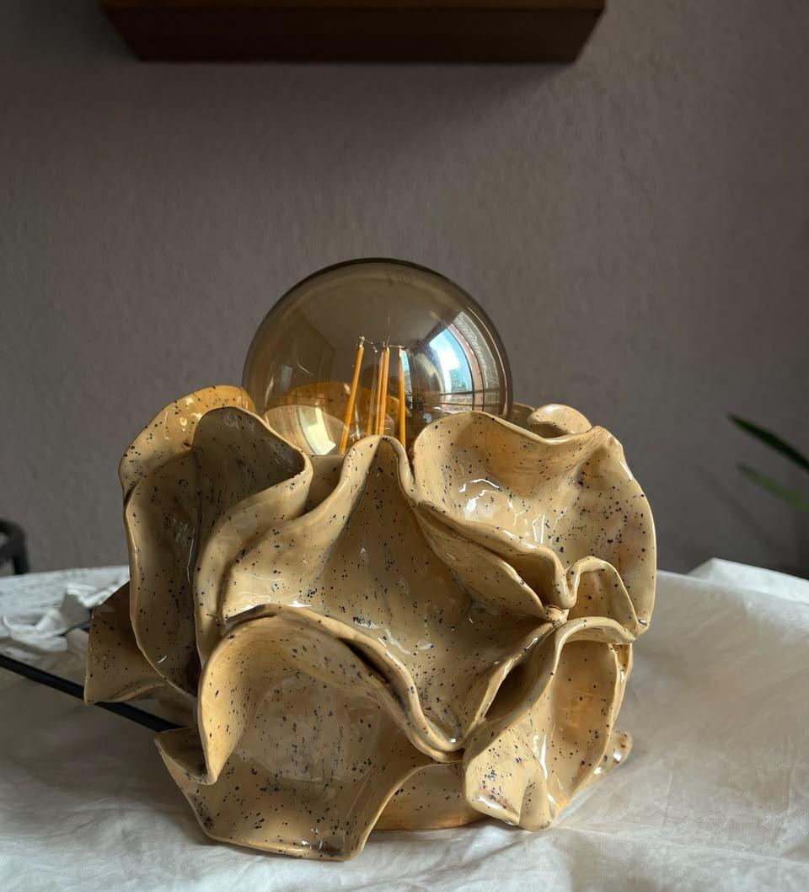
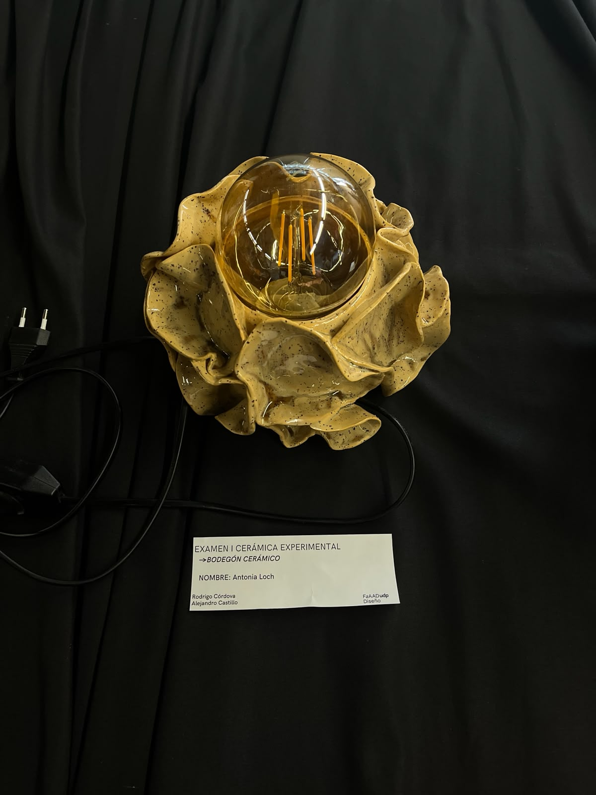
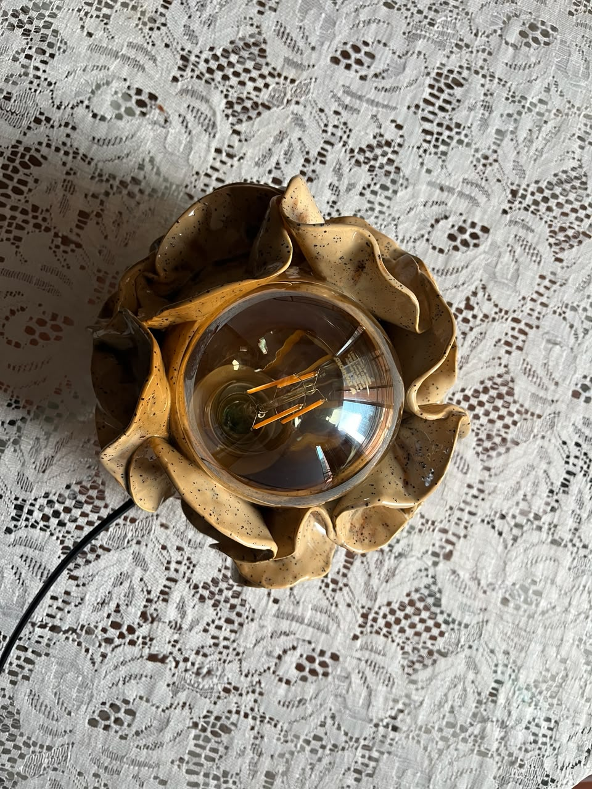

04 / 08
Lamp 01
Lámpara de mesa realizada en cerámica de baja temperatura, inspirada en las formas orgánicas de la naturaleza, particularmente en los hongos. Sus ondulaciones representan los pliegues y laminillas de estos organismos, envolviendo la ampolleta como si fuera su centro.
Para su construcción, primero se realizó una base de cerámica considerando las dimensiones de la ampolleta. Luego, se modelaron piezas de arcilla con forma de pétalos, que se fueron uniendo alrededor de la base mediante barbotina para crear los pliegues y volúmenes de la lámpara. Finalmente, se esmaltó en un tono ocre con moteado oscuro y se incorporó una ampolleta de filamento, cuya luz cálida resalta las formas, los relieves y el brillo del esmalte.


